Dataset Performance & Metrics
Performance Stability Analysis

Figure 1: Statistical test summary Friedman Nemenyi.
Métrica de Distância de Ranqueamento (ARD)
Figure 2: Summary of feature relevance ranks generated in all tests.
Mapeamento Multidimensional do Comportamento (MCA / Clustering)
Figure 3: Resume of ARD value for each experiment.
Métrica de Distância de Ranqueamento (ARD)
Figure 2: Rank correlation among models at 0% of perturbation.
Mosaico de Curvas de Resposta ao Item (ICCs) - Dataset Diabetes
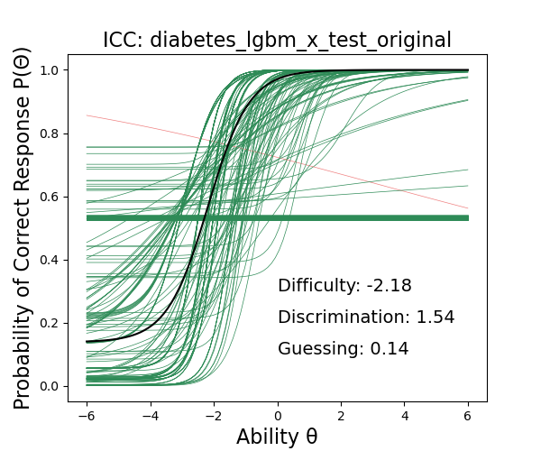
Atributo: Plas
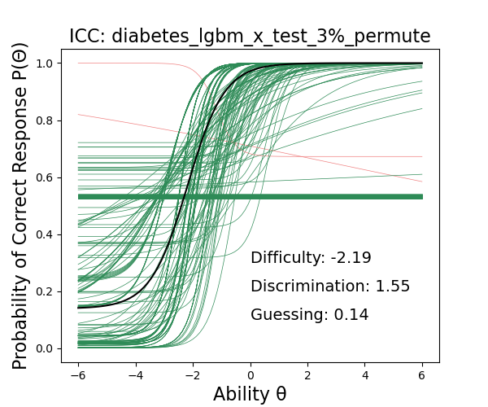
Atributo: Mass
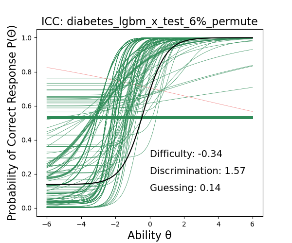
Atributo: Age
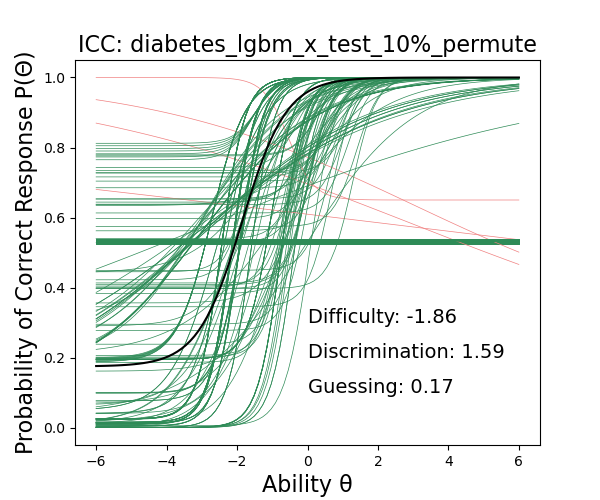
Atributo: Preg
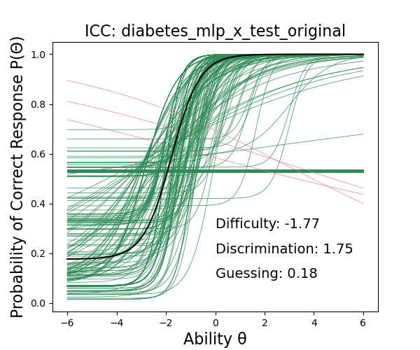
Atributo: Insu
Atributo: Pres
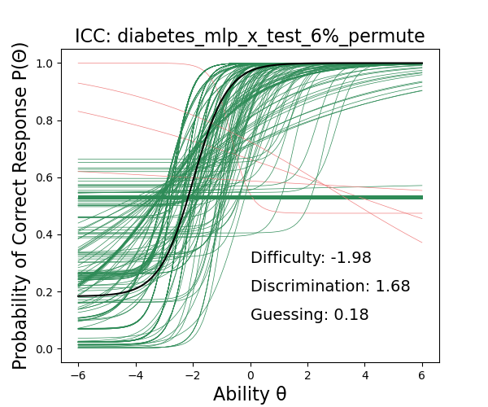
Atributo: Skin
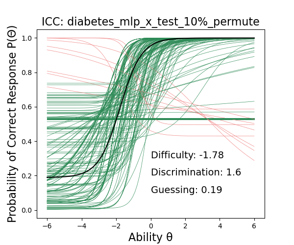
Atributo: Pedi
Figure 8: Summary of the global ICC of the LGBM and MLP Models.
Mosaico de Curvas de Resposta ao Item (ICCs) - Dataset Diabetes
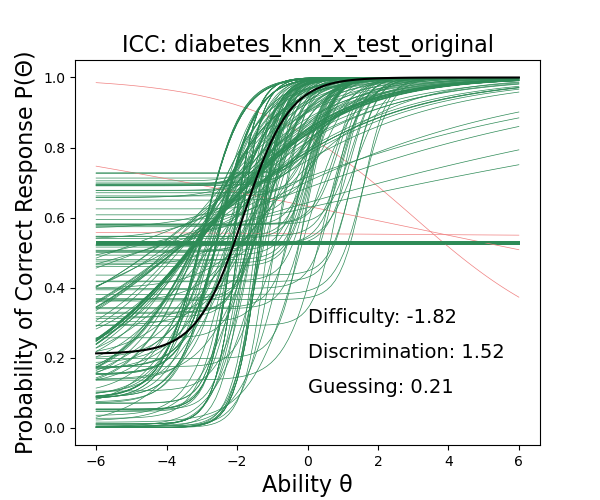
Atributo: Plas
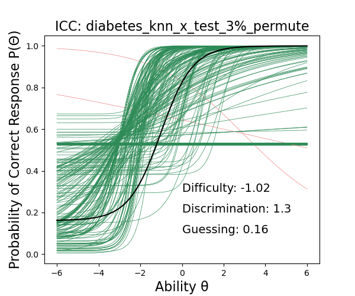
Atributo: Mass
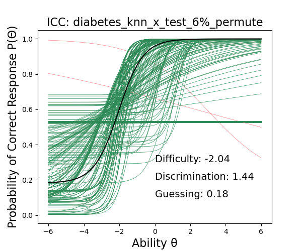
Atributo: Age
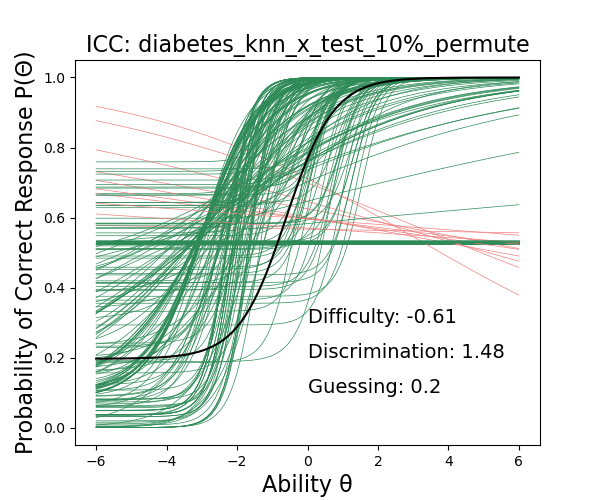
Atributo: Preg

Atributo: Insu

Atributo: Pres
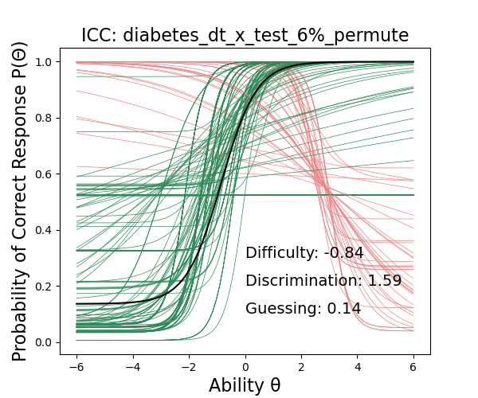
Atributo: Skin
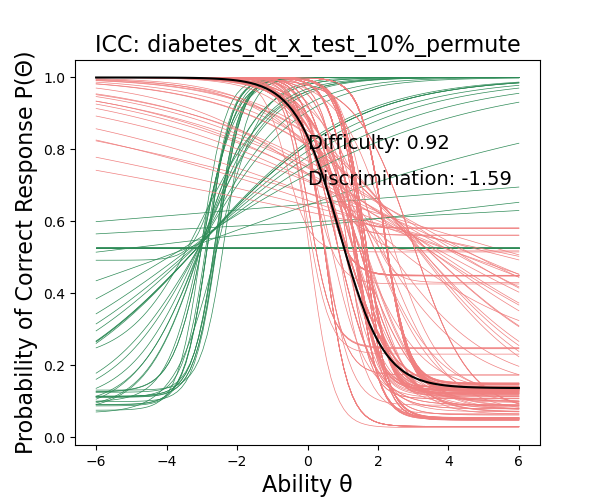
Atributo: Pedi
Figure 8: Summary of the global ICC of the KNN and DT Models.